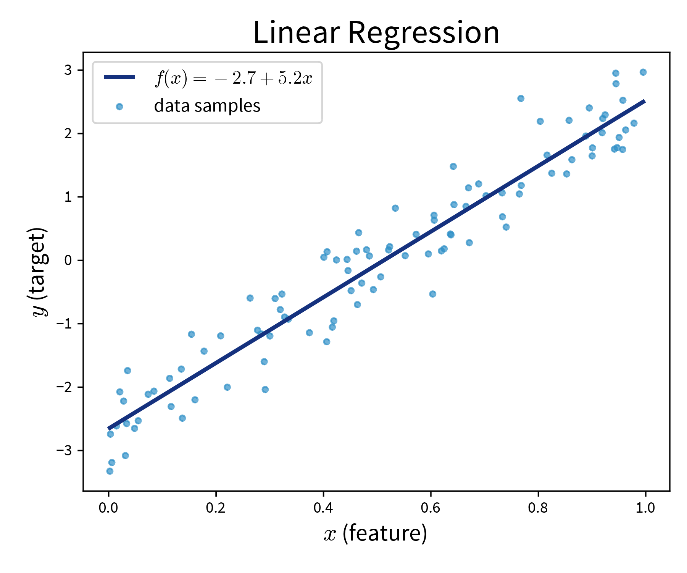
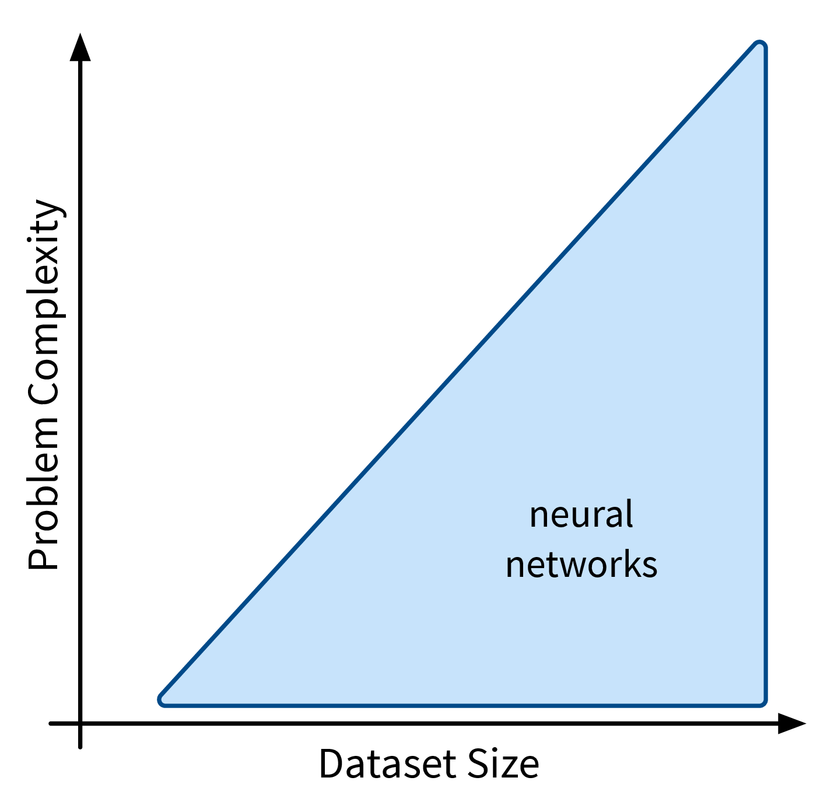
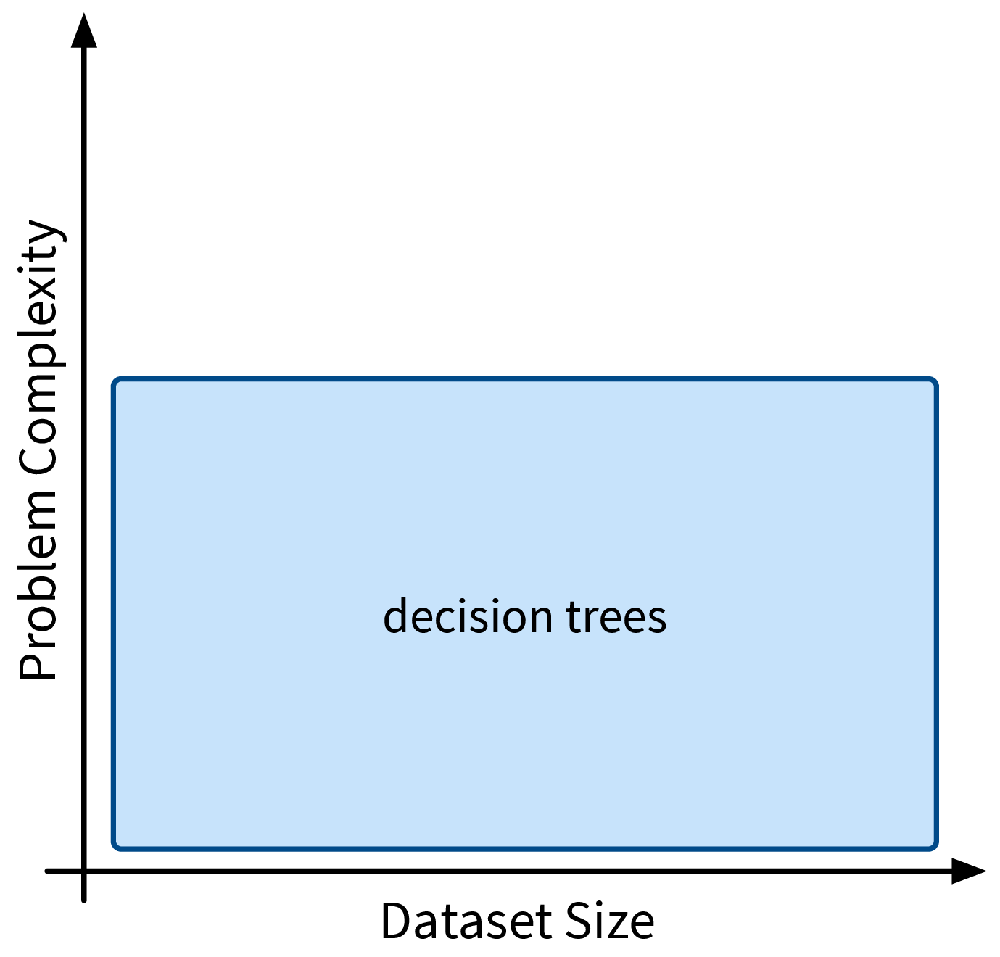
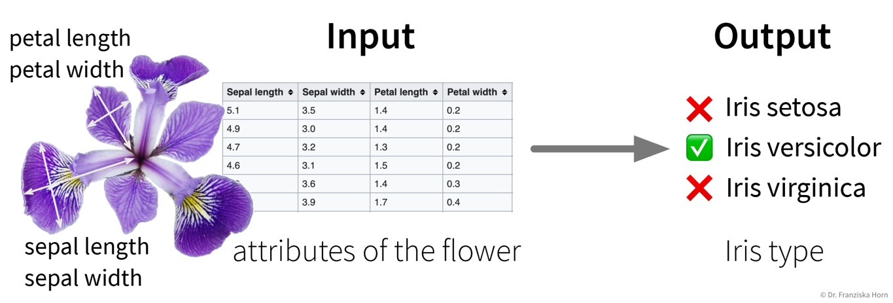
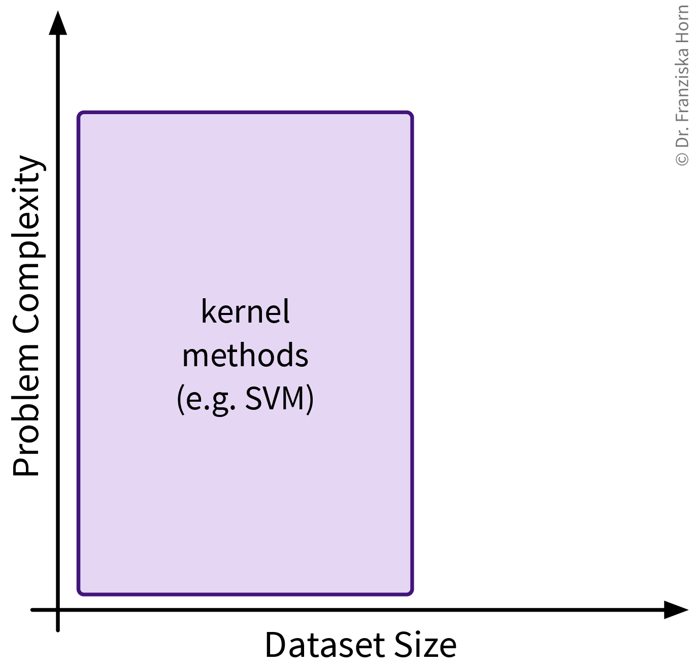
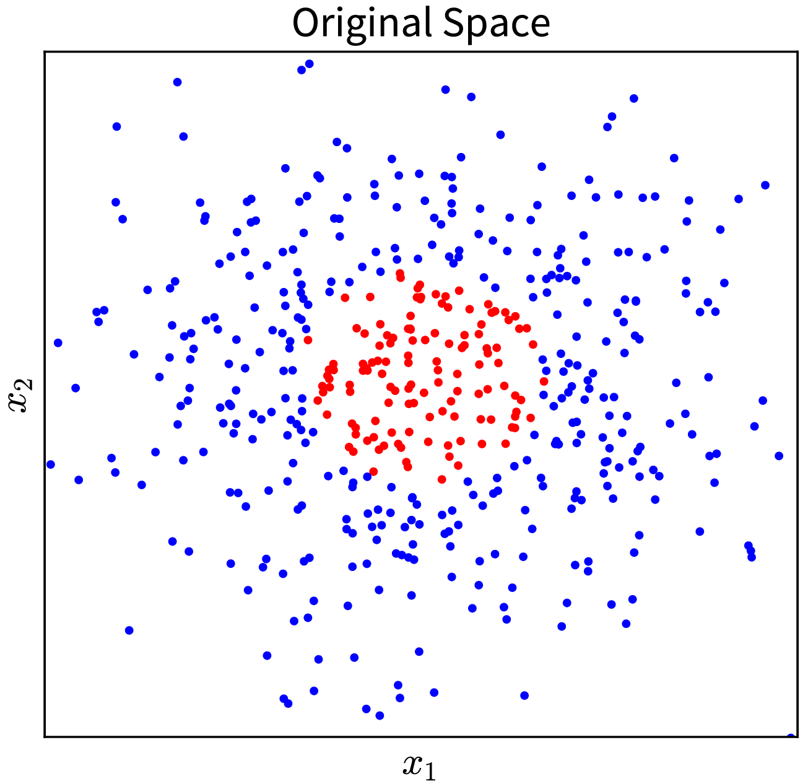
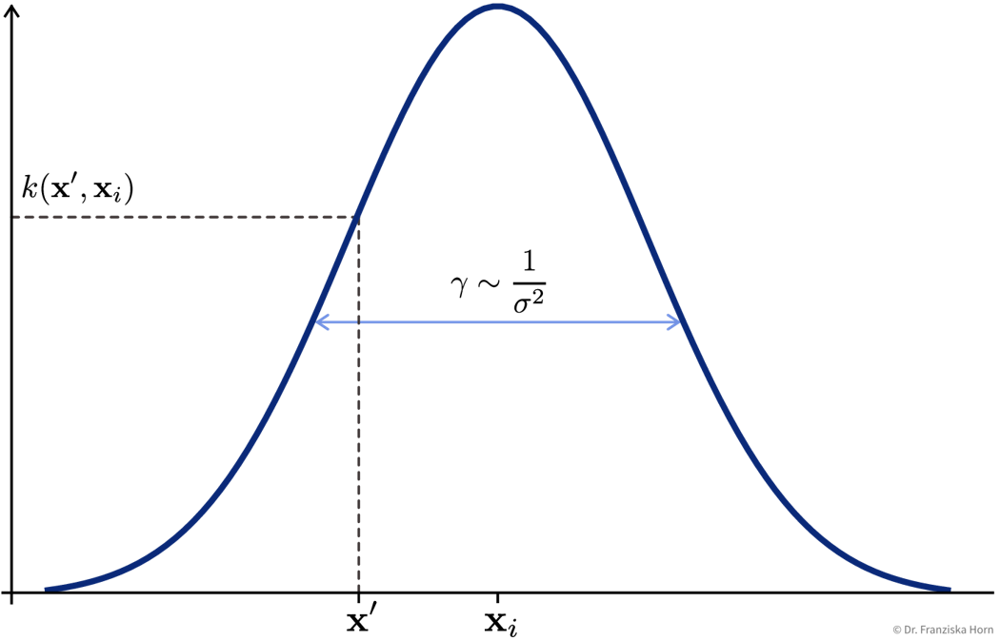

Supervised Learning Models
Now that you’re familiar with the basics of supervised learning – problem types, algorithmic approaches, model evaluation and selection – we discuss the different features- and similarity-based models in more detail:

Linear Models

The first type of supervised learning model that we’ll look at in more detail are linear models, which are a type of features-based model that are very efficient (i.e., can be used with large datasets), but, as the name suggests, are only capable of describing linear relationships between the input and target variables.
Linear models can be used for regression problems (→ the standard linear regression model that you might have already heard of) as well as for classification problems (→ logistic regression, which predicts a probability score between 0 and 1):


Main idea:
Prediction is a linear combination of the input features (and intercept \(b\)):
\[ f(\mathbf{x}; \mathbf{w}) = b + \langle\mathbf{w}, \mathbf{x}\rangle = b + \sum_{k=1}^d w_k \cdot x_k = \hat{y} \]
Linear Regression:
Find \(\mathbf{w}\) that minimizes MSE \(\| \mathbf{y} - \mathbf{\hat y}\|_2^2\) with \(\hat y\) computed as in the formula above.
Logistic Regression (→ for classification problems!):
Make predictions as
\[ \sigma\left(b + \langle\mathbf{w}, \mathbf{x}\rangle\right) = \hat y\quad\quad \text{with: } \sigma(z) = \frac{1}{1+e^{-z}} \quad \Rightarrow\; \hat y \in [0, 1] \]
where \(\sigma(z)\) is the so-called sigmoid (or logistic) function that squeezes the output of the linear model within the interval \([0, 1\)] (i.e., the S-curve shown in the plot above).
from sklearn.linear_model import LinearRegression, LogisticRegressionPros:
- Linear models are good for small datasets.
- Extensions for nonlinear problems exist ⇒ feature engineering (e.g., including interaction terms), GAMs, etc.
When a statistician tells you that they did a “polynomial regression” what they really mean is that they did some feature engineering to include new variables like \(x_5^2\) and \(x_2^3x_7\) and then fitted a linear regression model on this extended set of features. This means the model is still linear in the parameters, i.e., the prediction is still a linear combination of the inputs, but some of the inputs are now polynomial terms computed from the original features.
Careful:
- Regularization (to keep \(\mathbf{w}\) in check) is often a good idea.
Regularization
Motivation: For uncorrelated but noisy data, which model should you choose?

⇒ Regularization = assume no relationship between \(x\) and \(y\) unless the data strongly suggests otherwise.
This is accomplished by imposing constraints on the model’s weights by adding penalty terms in the optimization:
\[ \min_\mathbf{w}\; \underbrace{\sum_{i=1}^n (y_i - (b + \langle\mathbf{w},\mathbf{x}_i\rangle))^2}_{\text{Linear Regression}} + \lambda_1 \underbrace{\sum_{k=1}^d |w_k|}_{L1} + \lambda_2 \underbrace{\sum_{k=1}^d w_k^2}_{L2} \]
This means the optimal solution now not only achieves a low MSE between the true and predicted values (i.e., the normal linear regression error), but additionally does so with the smallest possible weights. (The regularization therefore also defines a unique solution in the face of collinearity.)
L1 Regularization (→ Lasso Regression): Sparse weights (i.e., many 0, others normal)
→ Good for data with possibly irrelevant features.
L2 Regularization (→ Ridge Regression): Small weights
→ Computationally beneficial; can help for data with outliers.
When you’re working with a new dataset, it often includes lots of variables, many of which might not be relevant for the prediction problem. In this case, an L1-regularized model is helpful to sort out irrelevant features. Then, when you are sure which input variables are relevant for the prediction problem, an L2-regularized model gives a robust performance.
from sklearn.linear_model import RidgeCV, LassoLarsCValpha increases regularization, C decreases it
Regularization is also used in many other sklearn models. Depending on the type of model (for historical reasons), what we denoted as \(\lambda\) in the formula above is a hyperparameter that is either called alpha or C, where you have to be careful, because while for alpha higher values mean more regularization (i.e., this acts exactly as the \(\lambda\) in the formula above), when the model instead has the hyperparameter C, here higher values mean less regularization!
Generalized Additive Models (GAMs)
GAMs are a very powerful generalization of linear models. While in a linear regression, the target variable is modeled as a sum of linear functions of the input variables (parametrized by the respective coefficients), GAMs instead fit a smooth function \(f_k(x_k)\) to each input variable and then predict the target variable as a sum of these:
\[ \hat{y} = b + \sum_{k=1}^d \; w_k \cdot x_k \quad\quad \Rightarrow \quad\quad \hat{y} = b + \sum_{k=1}^d \; f_k(x_k) \]

Neural Networks

Next up are neural networks (NN), which can be used to solve extremely complex problems (besides regular supervised learning tasks), but that are also rather data hungry (depending on the size of the network).
We’ll only cover the basics here; more advanced NN architectures, like those used to process image and text data, are discussed in the chapter on Deep Learning.
Basic Math \[ \small \begin{aligned} \begin{pmatrix} W_{11} & W_{12} & \cdots & W_{1j}\\ W_{21} & W_{22} & \cdots & W_{2j}\\ \vdots & \vdots & \ddots & \vdots\\ W_{i1} & W_{i2} & \cdots & W_{ij}\\ \end{pmatrix} \end{aligned} \]
Dangerous Artificial Intelligence \[ \small \begin{aligned} \begin{pmatrix} W_{11} & W_{12} & \cdots & W_{1j}\\ W_{21} & W_{22} & \cdots & W_{2j}\\ \vdots & \vdots & \ddots & \vdots\\ W_{i1} & W_{i2} & \cdots & W_{ij}\\ \end{pmatrix} \cdot \begin{pmatrix} W_{11} & W_{12} & \cdots & W_{1k}\\ W_{21} & W_{22} & \cdots & W_{2k}\\ \vdots & \vdots & \ddots & \vdots\\ W_{j1} & W_{j2} & \cdots & W_{jk}\\ \end{pmatrix} \cdot \begin{pmatrix} W_{11} & W_{12} & \cdots & W_{1l}\\ W_{21} & W_{22} & \cdots & W_{2l}\\ \vdots & \vdots & \ddots & \vdots\\ W_{k1} & W_{k2} & \cdots & W_{kl}\\ \end{pmatrix} \cdot \begin{pmatrix} W_{11} & W_{12} & \cdots & W_{1m}\\ W_{21} & W_{22} & \cdots & W_{2m}\\ \vdots & \vdots & \ddots & \vdots\\ W_{l1} & W_{l2} & \cdots & W_{lm}\\ \end{pmatrix} \end{aligned} \]
Deep learning just means using more matrices.
Overview
Recap: Linear Models
Prediction is a linear combination of input features (and intercept / bias term \(b\)):
\[ f(\mathbf{x}; \mathbf{w}) = b + \langle\mathbf{w},\mathbf{x}\rangle = b + \sum_{k=1}^d w_k \cdot x_k = \hat{y} \]
In the case of multiple outputs \(\mathbf{y}\) (e.g., in a multi-class classification problem \(\mathbf{y}\) could contain the probabilities for all classes):
\[ f(\mathbf{x}; W) = \mathbf{x^\top}W = \mathbf{\hat{y}} \]
For simplicity, we omit the bias term \(b\) here; using a bias term is equivalent to including an additional input feature that is always 1.
Intuitive Explanation of Neural Networks
[Adapted from: “AI for everyone” by Andrew Ng (coursera.org)]
Let’s say we have an online shop and are trying to predict how much of a product we will sell in the next month. The price we are willing to sell the product for will obviously influence the demand, as people are trying to get a good deal, i.e., the lower the price, the higher the demand; a negative correlation that can be captured by a linear model. However, the demand will never be below zero (i.e., when the price is very high, people wont suddenly return the product), so we need to adapt the model such that the predicted output is never negative. This can be achieved by applying the max function, in this context also called a nonlinear activation function, to the output of the linear model, so that now when the linear model would return a negative value, we instead predict 0.

This functional relationship can be visualized as a circle with one input (price) and one output (demand), where the S-curve in the circle indicates that a nonlinear activation function is applied to the result. We will later see these circles as single units or “neurons” of a neural network.
To get better results, we can extend the model and use multiple input features for the prediction:

To improve the performance even further, we could now manually construct more informative features from the original inputs by combining them in meaningful ways (→ feature engineering) before computing the output:

While in this toy example, it was possible to construct such features manually, the nice thing about neural networks is that they do exactly that automatically: By using multiple layers, i.e., stacking multiple linear models (with nonlinear activation functions) on top of each other, it is possible to create more and more complex combinations of the original input features, which can improve the performance of the model. The more layers the network uses, i.e., the “deeper” it is, the more complex the resulting feature representations.
Since different tasks and especially different types of input data benefit from different feature representations, there exist different types of neural network architectures to accommodate this, e.g.
- Feed Forward Neural Networks (FFNNs), also called Multi-Layer Perceptrons (MLPs), for ‘normal’ (e.g., structured) data
- Convolutional Neural Networks (CNNs) for images
- Recurrent Neural Networks (RNNs) for sequential data like text or time series
We’ll only cover FFNNs here; the other architectures are discussed in the chapter on Deep Learning.
Pros:
- State-of-the-art performance (especially on data with input invariances).
- Prediction for new test points is fast (just a few matrix multiplications).
Careful:
- Can take a long time to train (use a GPU!!! (or TPU)).
- Need a lot of data (depending on the size of the NN architecture).
- Solution only a local optimum (which is usually not too problematic in practice, as there are many good optima).
- Tricky to train: Performance depends on many parameters like learning rate, batch size, and even the random seed used when initializing the weights!
Feed Forward Neural Network (FFNN)
This is the original and most straightforward neural network architecture, which we’ve already seen in the initial example, only that in practice such a model usually has a few more layers and units per layer.
Each layer here is basically a linear model, i.e., it consists of a weight matrix \(W_i\) and some nonlinear activation function \(\sigma_i\) that is applied to the output. These layers are applied sequentially to the input features \(\mathbf{x}\), i.e., the network computes a composite function (in this case for three layers):
\[ f(\mathbf{x}) = \sigma_3(\sigma_2(\sigma_1(\mathbf{x^\top}W_1)W_2)W_3) = \mathbf{\hat{y}} \]

For a regression problem, the output of the network would be a direct prediction of the target values (i.e., without applying a final nonlinear activation function), while for a classification problem, the output consists of a vector with probabilities for the different classes, created by applying a softmax activation function on the output, which ensures all values are between 0 and 1 and sum up to 1.
Test your understanding:
- Why do we need the nonlinear activation functions between the layers, i.e., how could we simplify a network with multiple layers, if it didn’t have any nonlinear activation functions between the layers?
- In what way could we manipulate the parameters (i.e., weight matrices) of an existing neural network without changing its predictions? (This is also a reason why there exist many equally good local optima.)
Number of hidden layers and units:
While the size of the input and output layers are determined by the number of input features and targets respectively, the dimensionality and number of hidden layers of the network is up to us. Usually, the hidden layers get smaller (i.e., have fewer units) as the data moves from the input to the output layer and when experimenting with different settings we can start with no hidden layers (which should give the same result as a linear model) and then progressively increase the size of the network until the performance stops improving. Just play around a bit.
Training Neural Networks
To train a neural network, we first need to choose a loss function that should be optimized (e.g., mean squared error for regression problems or cross-entropy for classification problems).
While for a linear regression model, the optimal weights can be found analytically by setting the derivative of this loss function to 0 and solving for the weights, in a network with multiple layers and therefore many more weights, this is not feasible. Instead, the weights are tuned iteratively using a gradient descent procedure, where the derivative of the loss function w.r.t. each layer is computed step by step using the chain rule by basically pushing the error backwards through the network (i.e., from the output, where the error is computed, to the input layer), also called error backpropagation. At the beginning, all weight matrices are randomly initialized, so, for example, for a classification problem, for a given sample the network would predict approximately equal probabilities for all classes. The weights are then adapted according to their gradient, such that the next time the same samples are passed through the network, the prediction will be closer to the true output (and the value of the loss function is closer to a local minima).

Typically, the weights are adapted over multiple epochs, where one epoch means going over the whole training set once. By plotting the learning curves, i.e., the training and validation loss against the number of training epochs, we can check whether the training was successful (i.e., whether the weights have converged to a good solution).
Since a training set usually contains lots of data points, it would be too computationally expensive to do gradient descent based on the whole dataset at once in each epoch, so we instead use mini-batches, i.e., subsets of usually 16-128 data points, for each training step.
Tips & Tricks
Scale the data (for classification tasks only inputs, for regression tasks also outputs or adapt the bias of the last layer;
StandardScaleris usually a good choice) as otherwise the weights have to move far from their initialization to scale the data for us.Use sample weights for classification problems with unequal class distributions.
NN are trained with gradient descent, which requires a good learning rate (i.e., step size for each training iteration → not too small, otherwise nothing is learned, not too big, otherwise it spirals out of control):

A simple strategy to select a suitable initial learning rate is to train the network with different learning rates for one epoch on a subsample of the dataset and then check the loss after training. For too small learning rates (left), the loss will stay the same, while for too large learning rates (right) the loss will be higher after training. Sanity check: A linear network (i.e., a FFNN with only one layer mapping directly from the inputs to the outputs) should achieve approximately the same performance as the corresponding linear model from sklearn.
Gradually make the network more complex until it can perfectly memorize a small training dataset (to get a network that has enough capacity to at least in principle capture the complexity of the task).
When selecting hyperparameters, always check if there is a clear trend towards an optimal setting; if the pattern seems random, initialize the network with different random seeds to see how robust the results are.
Using a learning rate scheduler (to decrease the learning rate over time to facilitate convergence) or early stopping (i.e., stopping the training when the performance on the validation set stops improving) can improve the generalization performance.
But often it is more important to train the network long enough, like, for hundreds of epochs (depending on the dataset size).
→ more tips for training NN: Andrej Karpathy’s blog
Decision Trees

Next, we’ll look at decision trees, another type of features-based model that is very efficient as well, but can also capture more complex relationships between inputs and output.
We’ll describe the decision tree algorithm with the help of an example dataset:
Example: Iris Dataset
The famous Iris dataset was initially studied by the influential statistician R. Fisher. It includes samples from three different types of Iris flowers, each described by four measurements. The task is to classify to which type of Iris flower a sample belongs:

Main idea:
Iteratively set a threshold on one of the features such that the remaining samples are split into two “cleaner” groups, where “clean” means that all samples in a group have a similar label, e.g., belong to the same class in case of a classification problem:

To classify a new sample (i.e., if we went for a walk and found an Iris flower and decided to measure it), we compare the flower’s measurements to the thresholds in the tree (starting at the root) and depending on the leaf we end up in we get a prediction for the Iris type as the most frequent class of the training samples that ended up in this leaf. For regression problems, the tree is built in the same way, but the final prediction is given as the mean of the target variable of the training samples in a leaf.
The decision tree algorithm comes up with the decisions by essentially examining the histograms of all features at each step to figure out for which of the features the distributions for the different classes is separated the most and then sets a threshold there to split the samples.
from sklearn.tree import DecisionTreeClassifier, DecisionTreeRegressorImportant Parameters:
max_depth: Maximum number of decisions to make about a sample.min_samples_leaf: How many samples have to end up in each leaf (at least), to prevent overly specific leaves with only a few samples.
Pros:
- Easy to interpret (i.e., we know exactly what decisions were made to arrive at the prediction).
- Good for heterogeneous data: no normalization necessary since all features are considered individually.
Careful:
- If the hyperparameters (e.g.,
min_samples_leaf) aren’t set appropriately, it can happen that the tree becomes very specific and memorizes individual samples, which means it probably wont generalize well to new data points (also called “overfitting”, e.g., in the example above, one of the leaves contains only three samples, which might not have been a very useful split). - Unstable: small variations in the data can lead to very different trees.
Ensemble Methods
What is better than one model? Multiple models!
Main idea:
Train multiple models & combine their predictions (regression: average; classification: most frequent class).
- Different types of models.
- Same type of model but with different hyperparameter settings (this can also include the random seed used when initializing the model, e.g., for neural networks).
- Models trained on different subsets of the data (different selections of samples and/or features).
- Boosting: models are trained sequentially and each additional model focuses on those data points that the previous models got wrong.
Pros:
- More stable prediction (tip: use individual models that on their own overfit a bit).
- Get an estimate of how certain the prediction is → how many models agree?
Careful:
- Computationally expensive (depending on the models used).
Popular example: Random Forest
Multiple decision trees trained on random subsamples of the data, thereby exploiting the fact that decision trees can be sensitive to small variations in the dataset.
from sklearn.ensemble import RandomForestClassifier, RandomForestRegressorFor more advanced approaches, check out the voting ensemble and boosting methods from sklearn, with which arbitrary models can be combined into an ensemble.
Ensemble methods like random forests and gradient boosting trees give very good results on real world structured datasets and dominate the leader boards for many competitions at Kaggle, a website where companies can upload datasets for data scientists to benchmark themselves against each other and even win prize money.
k-Nearest Neighbors (kNN)

The first similarity-based model we’ll look at is k-nearest neighbors (kNN), which follows a rather naive and straightforward approach, but nevertheless often achieves a good performance on complex problems.
Main idea:
For a new sample, identify the k most similar training data points and predict the average of their target values / their most frequent class:

This kind of approach is also called Lazy Learning, since the model doesn’t actually learn any kind of internal parameters, but all the real computation only happens when we make a prediction for a new data point.
(When calling the fit-method on the sklearn model, a search tree is built to efficiently identify the nearest neighbors for a new data point.)
from sklearn.neighbors import KNeighborsRegressor, KNeighborsClassifierImportant Parameters:
n_neighbors: How many nearest neighbors to consider when making a prediction.metric: How to compute the similarity between the samples (default: Euclidean distance).weights: By setting this to'distance'instead of the default'uniform', the labels of the nearest neighbors contribute to the prediction proportionally to their distance to the new data point.
Pros:
- Intuitive approach.
Careful:
- Results completely depend on the similarity measure.
Kernel Methods

Kernel methods are more sophisticated similarity-based models and were the hot stuff in the late 90s, when datasets were still of moderate size and computers weren’t fast enough to train large neural networks. They have some elegant math behind them, but please don’t be discouraged, if you don’t fully understand it the first time you read it – this is completely normal 😉.
Main idea / “Kernel Trick”:
By working on similarities (computed with special kernel functions) instead of the original features, linear methods can be applied to solve nonlinear problems.
Assume there exists some function \(\phi(\mathbf{x})\) (also called a ‘feature map’) with which the input data can be transformed in such a way that the problem can be solved with a linear method (basically the ideal outcome of feature engineering).
For example, in the simple toy dataset shown below, the two classes become linearly separable when projecting the original input features into the space of their second order monomials:

→ \(\phi(\mathbf{x})\) →

In the original 2D representation on the left, we need a circle (i.e., a nonlinear function) to separate the blue from the red points, while in the 3D plot on the right, the data points are arranged in a cone shape, where we can cut off the red points at the tip of the cone with a hyperplane.
Of course, coming up with such a feature map \(\phi(\mathbf{x})\), especially for more complex problems, isn’t exactly easy. But as you will see, we don’t actually need to know what this transformation looks like!
Example: Kernel Ridge Regression
Remember: In a linear regression model, the prediction for a new data point \(\mathbf{x}'\) is computed as the scalar product of the feature vector with the weight vector \(\mathbf{w}\):
\[ \hat{y}' = \mathbf{x}' \mathbf{w} \]
(for simplicity, we omit the bias term here; using a bias term is equivalent to including an additional input feature that is always 1).
The parameters of a linear ridge regression model are found by taking the derivative of the objective function,
\[ \| \mathbf{y} - \mathbf{Xw}\|_2^2 + \lambda \| \mathbf{w}\|_2^2 \]
with respect to \(\mathbf{w}\), setting it to 0, and solving for \(\mathbf{w}\) (i.e. to find the minimum). This gives the following solution:
\[ \mathbf{w} = (\mathbf{X}^\top \mathbf{X} +\lambda I)^{-1}\mathbf{X}^\top \mathbf{y} \]
where \(\mathbf{X} \in \mathbb{R}^{n \times d}\) is the feature matrix of the training data and \(\mathbf{y} \in \mathbb{R}^n\) are the corresponding target values.
Now we replace every occurrence of the original input features \(\mathbf{x}\) in the formulas with the respective feature map \(\phi(\mathbf{x})\) and do some linear algebra:
\[ \begin{aligned} \hat{y}' &= \phi(\mathbf{x}') \mathbf{w} \quad\quad\quad\text{ with }\; \mathbf{w} = (\phi(\mathbf{X})^\top \phi(\mathbf{X}) +\lambda I)^{-1}\phi(\mathbf{X})^\top \mathbf{y}\\ &= \phi(\mathbf{x}') (\phi(\mathbf{X})^\top \phi(\mathbf{X}) +\lambda I)^{-1}\phi(\mathbf{X})^\top \mathbf{y}\\ & \quad\quad\vdots\\ &= \underbrace{\phi(\mathbf{x}')\phi(\mathbf{X})^\top}_{\mathbf{k}'= k(\mathbf{x'}, \mathbf{X})} (\underbrace{\phi(\mathbf{X}) \phi(\mathbf{X})^\top}_{\mathbf{K} = k(\mathbf{X}, \mathbf{X})} +\lambda I)^{-1} \mathbf{y}\\ &= \mathbf{k}'\underbrace{(\mathbf{K} +\lambda I)^{-1} \mathbf{y}}_{\mathbf{\alpha}} = \sum_{i=1}^n k(\mathbf{x}', \mathbf{x}_i) \alpha_i \end{aligned} \]
After the reformulation, every \(\phi(\mathbf{x})\) only occurs in scalar products with other \(\phi(\mathbf{x})\), and all these scalar products were replaced with a so-called kernel function \(k(\mathbf{x}', \mathbf{x})\), where \(k(\mathbf{X}, \mathbf{X}) = \mathbf{K} \in \mathbb{R}^{n \times n}\) is the kernel matrix, i.e., the similarity of all training points to themselves, and \(k(\mathbf{x}', \mathbf{X}) = \mathbf{k}' \in \mathbb{R}^{n}\) is the kernel map, i.e., the similarities of the new data point to all training points.
The prediction \(\hat{y}'\) is now computed as a weighted sum of the similarities in the kernel map, i.e., while in the normal linear regression model the sum goes over the number of input features d and the weight vector is denoted as \(\mathbf{w}\), here the sum goes over the number of data points n and the weight vector is called \(\mathbf{\alpha}\).
Kernel Functions \(\;k(\mathbf{x}', \mathbf{x})\)
A kernel function is basically a similarity function, but with the special requirement that the similarity matrix computed using this function, also called the kernel matrix, is positive semi-definite, i.e., has only eigenvalues \(\geq 0\).
There exist different kinds of kernel functions and depending on how they are computed, they induce a different kind of kernel feature space \(\phi(\mathbf{x})\), where computing the kernel function for two points is equivalent to computing the scalar product of their vectors in this kernel feature space.
We illustrate this on the initial example, where the data was projected into the space of second order monomials. When we compute the scalar product between the feature maps of two vectors \(\mathbf{a}\) and \(\mathbf{b}\), we arrive at a polynomial kernel of second degree:
\[ \langle\phi(\mathbf{a}), \phi(\mathbf{b})\rangle = (a_1^2, \sqrt{2}a_1a_2, a_2^2)(b_1^2, \sqrt{2}b_1b_2, b_2^2)^\top = \langle\mathbf{a}, \mathbf{b}\rangle^2 =: k(\mathbf{a}, \mathbf{b}) \]
i.e, computing the kernel function \(k(\mathbf{a}, \mathbf{b}) = \langle\mathbf{a}, \mathbf{b}\rangle^2\) between the two points is the same as computing the scalar product of the two feature maps \(\langle\phi(\mathbf{a}), \phi(\mathbf{b})\rangle\).
While for the polynomial kernel of second degree, \(\langle\mathbf{a}, \mathbf{b}\rangle^2\), we could easily figure out that the feature map consisted of the second order monomials, for other kernel functions, the corresponding feature map is not that easy to identify and the kernel feature space might even be infinite dimensional. However, since all the feature map terms \(\phi(\mathbf{x})\) in the kernel ridge regression formulas only occurred in scalar products, we were able to replace them by a kernel function, which we can compute using the original input feature vectors. Therefore, we don’t actually need to know what the respective feature map looks like for other kernel functions!
So while kernel methods are internally working in this really awesome kernel feature space \(\phi(\mathbf{x})\), induced by the respective kernel function, where all our problems are linear, all we need to know is how to compute the kernel function using the original feature vectors.
If you are curious what the kernel feature space looks like for some kernel function, you can use kernel PCA to get an approximation of \(\phi(\mathbf{x})\). Kernel PCA computes the eigendecomposition of a given kernel matrix, thereby generating a new representation of the data such that the scalar product of these new vectors approximates the kernel matrix. This means the new kernel PCA feature vector computed for some data point \(i\) approximates \(\phi(\mathbf{x}_i)\) – however, this still doesn’t tell us what the function \(\phi\) itself looks like, i.e., how to get from \(\mathbf{x}\) to \(\phi(\mathbf{x})\), we only get (an approximation of) the final result \(\phi(\mathbf{x})\).
In the example above you were already introduced to the polynomial kernel of second degree; the generalization, i.e., the polynomial kernel of degree k, is computed as \(\langle\mathbf{x}', \mathbf{x}_i\rangle^k\).
The most popular kernel function that works well in many use cases is the Radial Basis Function (RBF) / Gaussian kernel:
\[ k(\mathbf{x}', \mathbf{x}_i) = e^{-\gamma \|\mathbf{x}_i - \mathbf{x}' \|^2} \]

Support Vector Machine (SVM)
A more efficient method, especially when the training set is large.
Key idea: Only compute similarity to ‘most informative’ training points (= support vectors):

\[ \sum_{i=1}^n k(\mathbf{x}', \mathbf{x}_i) \alpha_i \quad \Rightarrow \quad \sum_{i \in \{\text{SV}\}} k(\mathbf{x}', \mathbf{x}_i) \alpha_i \]
This reduces the memory requirements and makes the prediction for new data points much faster, since it is only necessary to store the support vectors and compute the similarity to them instead of the whole training set.
from sklearn.decomposition import KernelPCA # Kernel variant of PCA
from sklearn.kernel_ridge import KernelRidge # Kernel variant of ridge regression (→ use SVR instead)
from sklearn.svm import SVC, SVR # SVM for classification (C) and regression (R)Important Parameters:
kernel: The kernel function used to compute the similarities between the points (→ seesklearn.metrics.pairwise; usually'rbf').- Additionally: Kernel parameters, e.g.,
gammafor'rbf'kernel.
Pros:
- Nonlinear predictions with global optimum.
- Fast to train (on medium size datasets; compared to, e.g., neural networks).
Careful:
- Computationally expensive for large datasets (kernel matrix: \(\mathcal{O}(n^2)\)).
- Kernel functions, just like other similarity functions, benefit from scaled heterogeneous data.